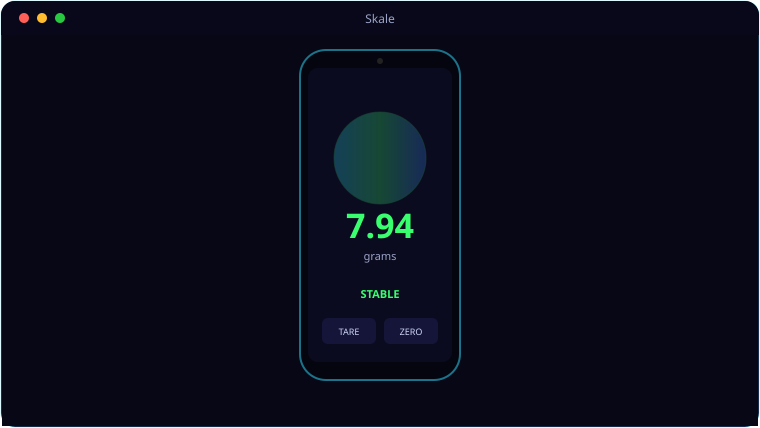

A look inside Skale.

Everything Skale brings to the table.
Contact-Area Sensing
Maps each touch point's major/minor axes to an ellipse area, summing all simultaneous contacts into a live weight.
18-Coin Auto-Calibration
Calibrate instantly by placing a known coin from a picker of 18 common UK, US, EU and AU coins — or type an exact gram value.
Live Readout
A monospace green display shows grams immediately, with STABLE/MEASURING status and visible contact ellipses.
Tare & Zero
Tare and zero buttons let you weigh on top of a container, just like a real scale.
Auto or Precise
A DPI-based default means numbers show on first run; calibrate for precision and the label switches AUTO → CALIBRATED.
System requirements.
Minimum
- OS: Android 8.0 (Oreo) or newer
- Memory: 3 GB RAM
- Storage: ~100 MB free
- Screen: Touchscreen, 720p or higher
- Install: allow install from APK (sideload)
- Hardware: capacitive touchscreen (senses conductive objects only)
Recommended
- OS: Android 12 or newer
- Memory: 6 GB RAM
- Device: Modern Samsung Galaxy (tested on the S20)
- Storage: 200 MB+ free
- Screen: 1080×2400 AMOLED or better
Skale reads the capacitive touchscreen, so it only senses conductive objects — coins, cutlery, a glass of water.
The details.
| Platform | Native Android (Kotlin), minSdk 26 |
| Method | Touch contact ellipse area (π·major·minor/4) → grams |
| Calibration | 18-coin picker or manual grams, RESET TO AUTO |
| Note | Capacitive screens only sense conductive objects (coins, cutlery, water) |
| Tested on | Samsung Galaxy S20 |
Get Skale.
Weigh small objects using your phone's touchscreen.
⬇ Download SkaleSkale.apk · free · Android 8+